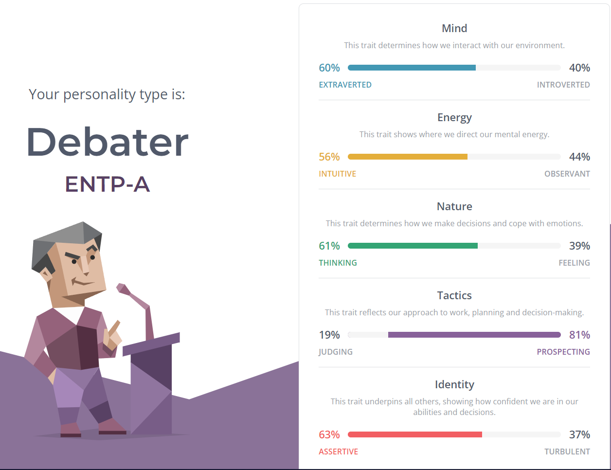

hello everyone welcome to my website! be sure to check out My instagram and my youtube page
Back to homepage My interest in IT My ideal job The Big Project

Honestly these test results mean very little for me, this is because i believe that there is no way to 100% accurately determine someone's personality due to their own self biases whilst answering the questions, even while i was answering the questions was often unsure about what i actually felt towards some of the questions. Despite this i suppose that this test gives you a very loose basis on your personality type.
I doubt that these results will have little to no influence on my behaviour in a team, these tests are the equivalent to astrology so letting them influence your behaviour would be foolish, the only possible effect I could see this test having on my behaviour would be being more self aware of my actions. Unless this question is refering to role delegation or something? in which case i spose you could use these results as a justification for delegating certain people certain roles
Well even though i don't believe in the complete accuracy of the tests i can acknowledge that the test can give you a loose idea on a person's personality type. Knowing this i should group up with people who have the opposite results from me, therefore complimenting my personality type and offering an opposing viewpoint to my ideas, therefore allowing the best ideas to prosper.